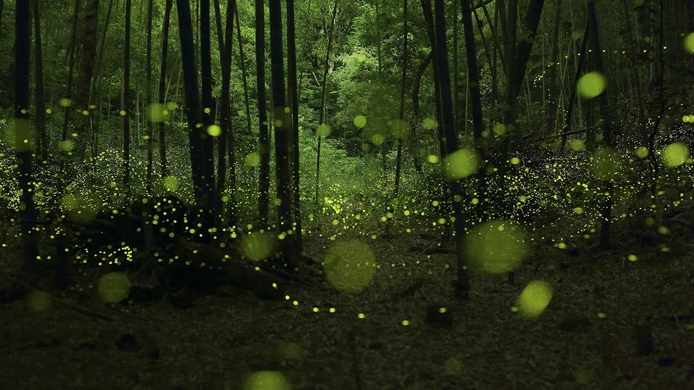
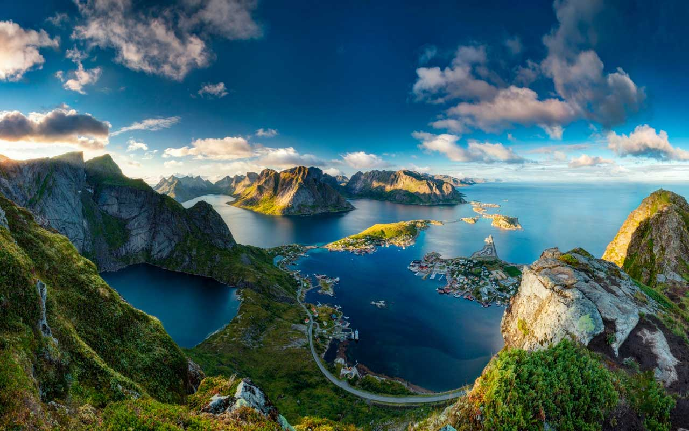

过去，我这儿有新鲜的空气，清澈的河流，雄伟的高山，一望无际的草原，郁郁葱葱的森林。天空中，小鸟在自由自在的飞翔；水里，小鱼在快活的游来游去；森林里，动物们快乐地嬉戏，人类辛勤的种植。一切都是那么美好，那么和谐！
随着时代的发展，人类变得越来越聪明了，科技也越来越发达了，但他们忽略了我们。各种各样的工厂如雨后的竹笋般冒出来，到处黑烟滚滚，臭气熏天，污水到处流，垃圾片地都是，新鲜的空气被污染了，清澈的河水变成了污水沟，天空的小鸟不再飞翔了，花朵不再开放……
大树爷爷说：“可恶的人类，我恨死你们啦！不要那么自私好不好，你们倒是好了，我们怎么办啊，把我们看了，你们就抵挡不了龙卷风刮和沙尘暴了，没有大自然，你们早就死了。”
白云姐姐说：“以前我是多么的洁白，多么的美丽，多么的吸引人啊，可现在，到处乌烟瘴气，把我都染得黑漆漆的了，真讨厌！”
小河哥哥说：“以前我是多么的清澈，多么的开心，多么的甜。但由于人类太不道德了，午睡到处流，我被弄得脏兮兮的，臭臭的。小鱼小虾都不和我玩了，花草都死了，只剩下我孤单的在这里！哇呜呜呜！！！”
我，哭了。我们并不想要这样，人累的一点小聪明给我们变得不快乐了，危害了大家的生命，值得吗？我们不想在这个陌生的地方，我们要回到以前快的日子，回到那个美好和谐的社会。
大家应该要知道，人类只有一个地球。一旦失去就再也回不来了，保护我们的地球吧！保护环境，珍惜水资源，珍爱生命，让我们的地球更美丽，让地球变得更好。从我们身边的小事做起，少丢一点垃圾，遇到垃圾捡一捡，回收废旧物……
大自然她千变万化，她好似一道永远也解不开的数学题，深奥无比；她好似一位艺术家，把世间万物打扮得婀娜多姿；偶尔她还似一位脾气古怪的人，一会温柔，一会阴沉，一会暴躁。大自然给予我们无穷的快乐，她的魅力也是无穷无尽的。
天气晴朗，天空万里无云，温暖的阳光洒在人的身上，就像是一位母亲轻轻地抚摸着我们，微风徐徐，波光粼粼，站在美丽的湖边尽情享受大自然的无穷魅力。
阴天多云，看似阴沉的天气却暗藏生机。这时太阳就像是一位害羞的小女孩，迟迟不肯露面，这样子还平添了几分乐趣。
下雨天气，虽然外面的人都匆匆回家，但是并不寂寞。雨点的声音感觉并没有什么规律，可仔细一听，欢快的乐曲在耳旁奏响，让人心情爽朗。有时还想在雨中激情地奔跑，让烦恼和雨点融在一起挥发掉。大自然是万物之母，她派雨水为植物提供营养，植物们又随着雨点的伴奏，左摇右摆，动人极了！
天气寒冷，人们都我在家里，开着暖气，悠闲的看着电视，有时还会想起北方的小朋友开开心心地打雪仗、堆雪人。突然一个鞭炮爆炸了，一下子把你的幻想全“炸”乱了，你立马吓住了，这是你一定会愤怒的说：“是哪个混蛋干的？”
大自然真美啊！不管天气如何，你的美给人的感受都是不同的。